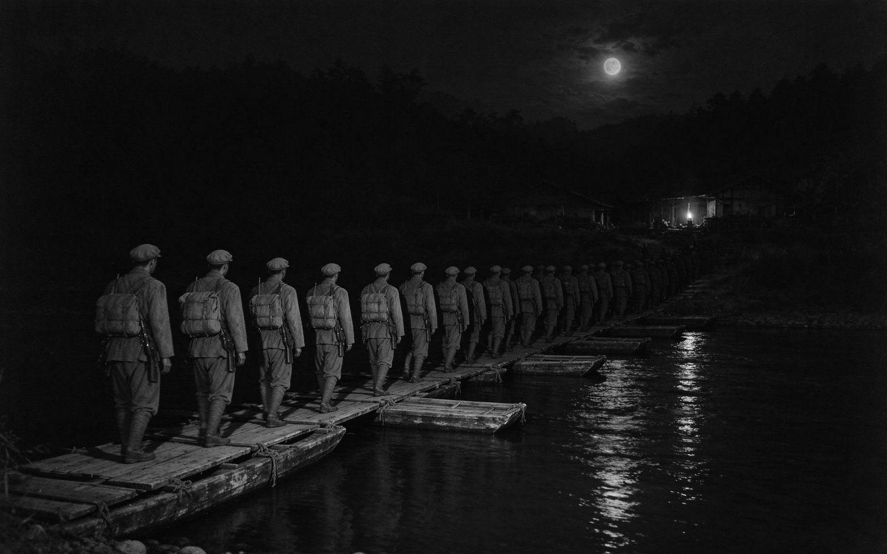
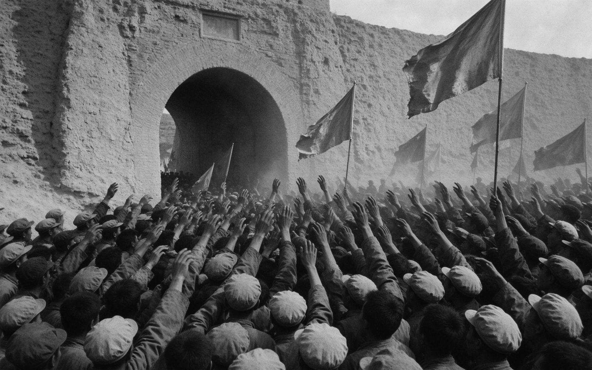

走过的路
25,000里
从江西于都出发，一程一程走到陕北。
THE LONG MARCH / THE SPARK
四支队伍，一张地图。
二万五千里，每条线都有名字。
路，在脚下延伸。
火种，在行进中不灭。
路线及节点位置为史料示意，未还原全部支线。底图：DataV.GeoAtlas。缩放后可拖动 · Esc 复位
25,000里
从江西于都出发，一程一程走到陕北。
373天
1934 年 10 月出发，次年 10 月抵达吴起镇。
8.6 → 3万余人
出发时有八万六千余人。突破湘江后，队伍只剩三万余人。
从出发、转折，到会师。
点选年份，回到行军的现场。
中央红军主力 8.6 万余人从江西于都出发，开始战略转移。
血战五昼夜突破第四道封锁线，中央红军锐减至 3 万余人。
采纳毛泽东向贵州转兵的主张，改变原定去湘西的计划。

事实上确立了毛泽东在党中央和红军的领导地位。
在川黔滇边声东击西，摆脱数十万敌军的围追堵截。
七条小船九天九夜，跳出敌军包围圈。
十七勇士在安顺场乘船强渡成功。
二十二名突击队员攀着十三根铁索冲过火海。
长征途中第一座大雪山，海拔 4000 多米。
茫茫水草地七天七夜，以野菜、皮带充饥。
打开北上进入甘南的通道。
历时一年、纵横十余省，中央红军长征胜利结束。
红一方面军与红四方面军在会宁会师。
红二方面军到达将台堡，三大主力会师，长征胜利结束。
